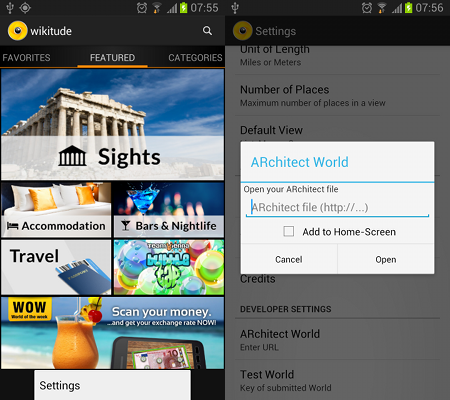

Development Workflow
The following section describes a default development workflow for writing AR content using the ARchitect JavaScript API. It demonstrates the code test and debug cycle and provides useful tips for each step.
Code, Test, Debug
- Write your HTML, JavaScript and CSS using the text editor of your choice
- Test in your desktop browser
- Debug in your desktop browser using e.g. WebInspector
- Test on a physical device
- Debug on a physical device
- Rinse and repeat
You can use any editor for writing the ARchitect World. We particularly like Sublime, which has a great selection of plugins for web developers.
The next step is to test it out in a desktop browser. To have the ARchitect JavaScript API available in the desktop browser you'll need to include the ARchitect Desktop Engine (ADE). See the chapter ARchitect Desktop Engine for instructions on how to use it. While this is limited in visualizing the experience, it greatly helps in finding errors in the JavaScript code and reduces the time it takes to see effects of changes you have made to the HTML and CSS parts. Desktop browsers come with great debugging tools (e.g. Chrome's DevTools ) that allow you to easily debug your JavaScript code and that you should make full use of when debugging ARchitect Worlds.
Once you have verified the JavaScript is working properly you should test it on the device of your choice. Either start your application that loads the ARchitect World or run it inside the Wikitude World Browser app.
Run ARchitect World in the Wikitude World Browser on Android
ARchitect Worlds on an Android device can be tested using the Wikitude World Browser for Android. Download the Wikitude app from Google Play. Launch the application and press the menu button in the main screen to enter the settings. Press ARchitect World in the developer section and type in the URL of your World. Press Open to launch your World. You can also add a shortcut to your World on the favorites screen using the Add to Home-Screen checkbox.

On-Device Debugging
Debugging an ARchitect World on an Android device involves downloading and installing NodeJS and the Weinre remote debugger and is therefore not as straight forward compared to on-device debugging on an iOS device.
Note: Setting break points is not possible using Weinre on Android.
Setup steps
- Download NodeJS http://nodejs.org/#download
Open the console on your MacOS X or Linux desktop (or server) and enter the following command to start the installation of Weinre
sudo npm -g install weinreConnect the target device and the server in same WiFi network
- Obtain your the IP address of your desktop PC (e.g. via
ifconfigoripconfigin the console) Enter the following lines in desktop PC’s console to start a server on IP (e.g. 10.0.0.1)
weinre --httpPort 8080 --boundHost 10.0.0.1(you must adjust the IP address accordingly and may have to adapt the port number)Add the following script tag in the head section of the HTML file you want to debug
<script src="http://10.0.0.1:8080/target/target-script-min.js#anonymous"/>Modify IP address and port if necessary.Start your application and load your ARchitect World on the Android device
Open your preferred web browser on your desktop PC and visit
http://10.0.0.1:8080/client/#anonymousModify IP address and port if necessary.Start the debugging session by clicking the top level tabs